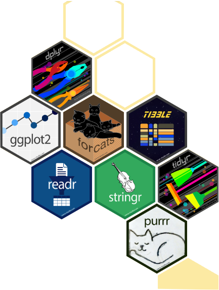

Statistical Inference For Data Science

Preface
Who I am. I am Saul Diaz Infante Velasco. I just starting as assistant professor at the Data Science graduate program of Universidad de Sonora at Hermosillo Mexico. My Background is related with numerical analysis and stochastic models. I’m are a enthusiastic of this treading topic called Data-Science, but perhaps at the moment I only have just intuition about what really it is. However, I have been programming almost 20 years an moved from old programming langues as FORTRAN, Pascal, Basic, Cobol, C, C++ to the new well established treading development workflows like R, Python and Julia. This is my firs attempt in R.
More of this book is work in progress. We aim to provide material as well we review and improve our basic skills to face the study of the most popular methods in Machine learning. Thus the book try to cover fundamentals in R programming as data types, flow control structures and put particular importance in the well practice of coding functions. Then we moves to the management of data whit dplyr and other packages. To finish this part we discuss some package to visualize data. Then, we face the problem o estimation and explore techniques based on bootstrap–and another sampling flavors.
This book has been started on January, 2023 as part of a course to the Master on Data Science from Universidad de Sonora.
I’m writing this book to follow a path of self learning, understanding and and joy for this matter called Data Science. I’m not try to become and expert instead I just pursuit the joy of the interaction of math, computational sciences and the generosity of this virtuous learning-teaching process.
https://sauldiazinfante.github.io/statisticalInferenceinR4DS/